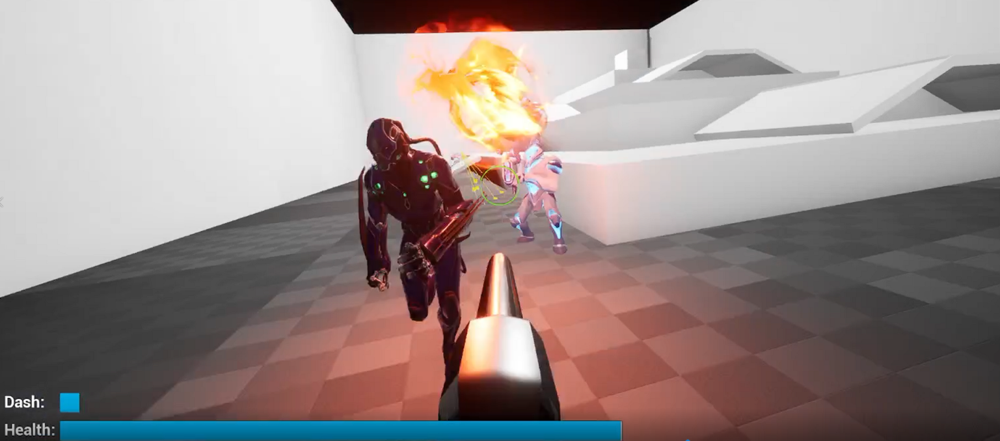
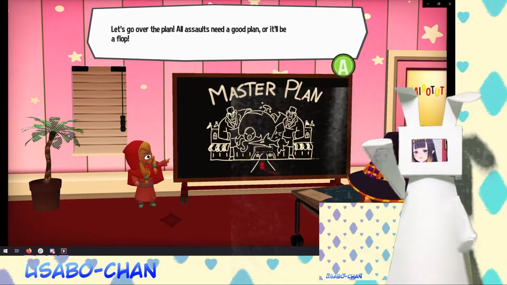
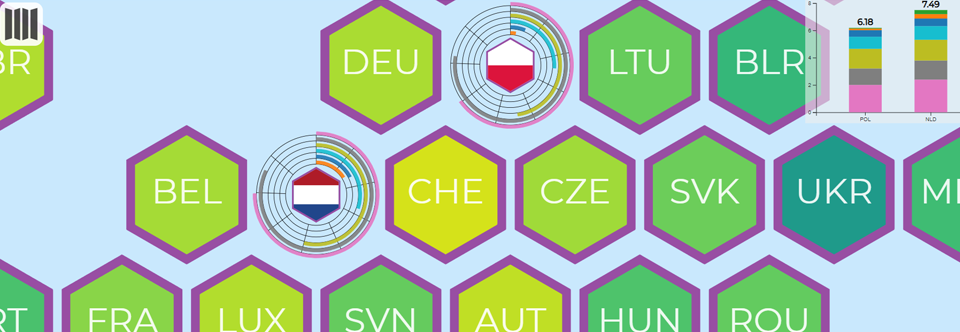
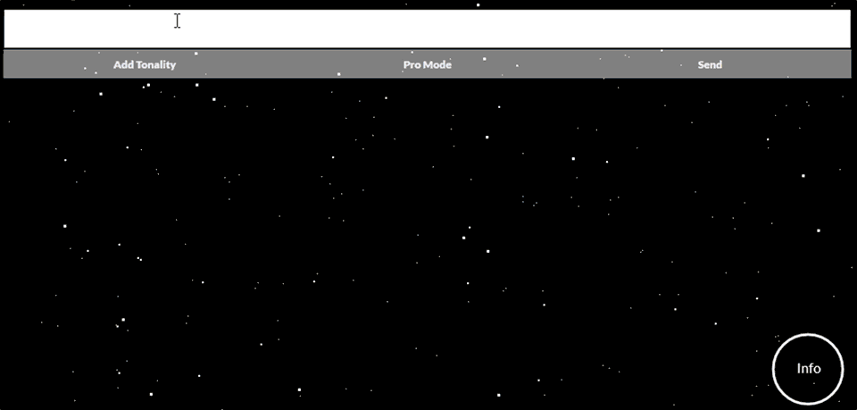
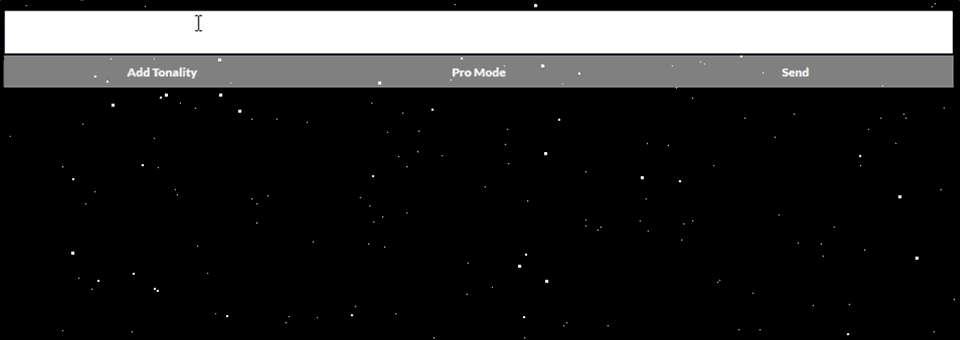
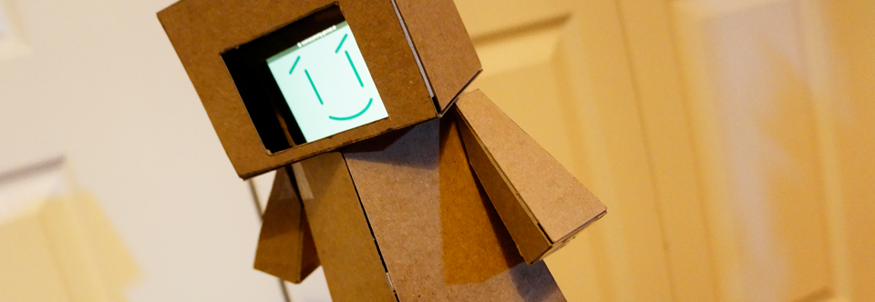
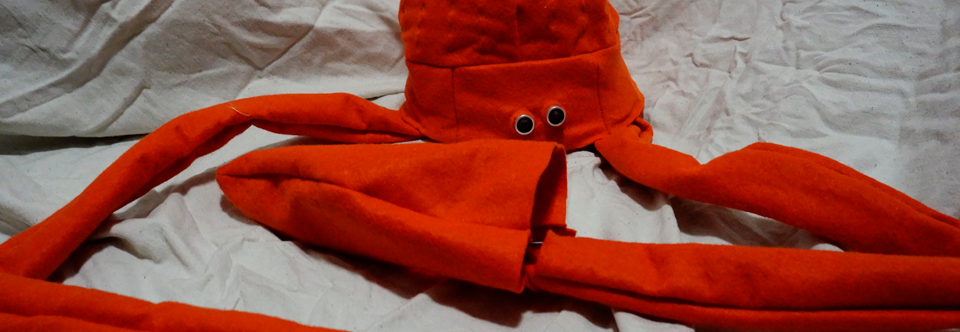
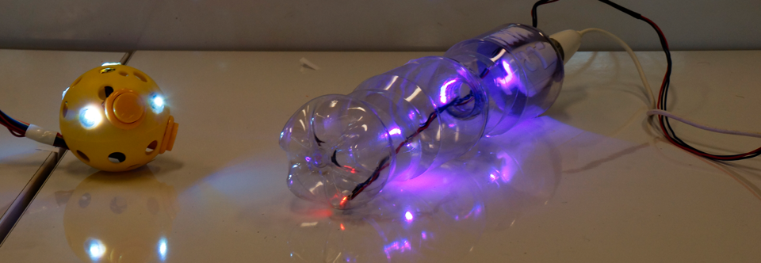
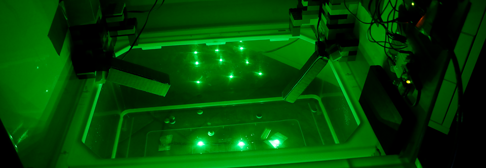
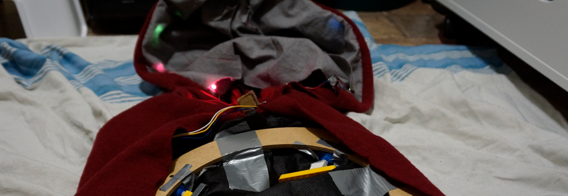

colin.auyeung/research


Grad Courses


CPSC 601: Sustainable Interaction Design
Let’s Go Out to Eat: Self-Reflections on the Experiences of Co-Dining
Autobiographical reflections on co-dining as a first exploration for designing technology for co-dining
CPSC 601: Wearable Applications
IN//OUT-OF Character: Controlling Dynamic Cosplay Elements with Implicit and Explicit Interaction
An embedded hardware interface to support both implicit
and explict control of reactive cosplay elements
CPSC 601: Wearables and Haptics
Teabot: Supporting Physicality in Remote Tea Sharing
A prototype system for supporting tangible embodied interactions in a remote co-dining setting.
Undergrad Courses
CPSC 599: Visualization and Analytic
The New Media: Looking at the Twitter Behaviour of US House of Representatives Candidates in the Last Two Months of the 2020 General Election
A data story exploring US House of Representative's use of Twitter (now X.com) leading up to the 2020 election

CPSC 599: Ai in Video Games
Cyber Dungeon: A Q-Learning based
rogue-like
with David Garcia and Nikita Tripathi
A First-Person Shooter using Q-learning to fine tuning game difficulty

CPSC 584: Human Robot Interactions
Usabo & Friends: Imagining Robotic Avatars
for Virtual Youtubers
A qualitative survey project exploring the use of robotic avatars
for livestreaming using video prototypes with puppet robots

CPSC 583: Intro to InfoVis
World Happiness Visualization
with Michael Hung and Nathan Meulenbroek
Visualization of data from the World Happiness Report on a country by country
basis
Sonic Journey
Assignment 0: The Button
A single button system that recreates the feeling of taking an aimless motorcycle ride


Intonation Incantation
Assignment 1: Wordless
A messaging app that
conveys intonation in text conversations

Usabo
Assignment 2: The Relationship
A cardboard body for your phone that transforms it into an interactive toy

Hello Squid
Assignment 1: Arduino Hello World
A squid hat that allows you to communicate your emotions in one button

Tonnetz Magic
With Sarah Walker
Assignment 2: Physical Input
An interface for playing music tonnetz space

Git-Tama
with Daniel Lee
Assignment 3: Physical Output
A physicalization of Github activity
